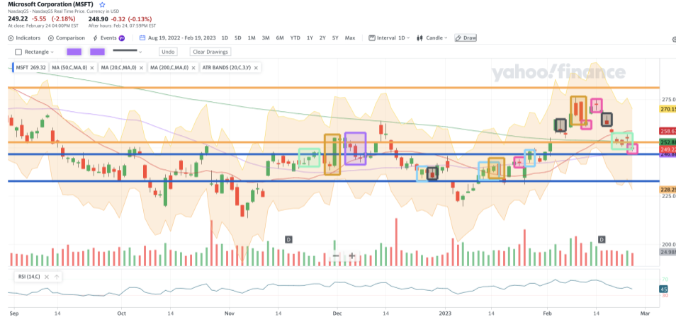

Math
Budget assgiment
In this assgiment we were tasked to create one year plan for a given salary my salary was 30k. Then we had to make it with the job the we want to get in the future.Click here to see the assgiment
Methods
Using google sheets I was able to orginze my information in a way that would easily be understood. The top box is where I would remove the taxes from my gross earnings. In the bottom box I put all of the yearly expenses and therefore add them up and find the remaining money with this lifesyle. I also made other sheets going more in depth with the expenses.
Format
As I mentioned before I used google sheets to help me display my information clearly. I put all of the taxes at the top of the sheet with the expenses at the bottom.
Takeaways
- I am able to use google sheets proficiently to display my information in a clear manner. I also can use the formulas in google sheets to a high degree this is true since if you change one vairble in my equations you can see that everything else changes accordingly.
- I am able to problem solve around challenges by thinking logicly about what is wrong. Just like working around the difficulties of google sheets and the salary.
Probability assigment
For the probability assigment I was able to use my knowledge of mathematics and stock to make a technical analysis on MSFT(microsoft) and therefore allow me to make a fraction of the percentage of indicators working.Click here to see the assgiment
Method
For this assigment I researched about many indicators for the stock market. Then I put these indicators to the test and was trying to see how well do they work. I did this by making a predication using the analysis and seeing whether it would work. After the stock reached a certain amount I checked which ones worked.
Format
For this I talked about the indicators then I put them all into a graph, and made my prediction. Then I waited for the prediction and once it finished I saw whether how many indicators were right and wrong and wrote my conclusion at the bottom.
Algebra in business
In this project we were tasked to make a business track down all of the expenses and putt a break even point. I decided to make a bakery selling cakes.(Although I thought I did this correctly at the time I didn't use the formula FC+VC*n as I was not here for that formula therefore my fc does not increase but it might still be correct because I calulated the fc by the daily cost and inculded it in the vc)
Format
For this assigment I put two sections dedicated to the FC these inculde items such as the utlities, rent, and salaries. I classified them into two different sections captial expense and operational expense. Operational expense are expnese that are needed for to run the business and Capital expense are expenses that are required to start a business. To calulate the Capital expense I took the one time cost and the estimated life span and divided them to give me the yearly cost and from there I can divide it to get to the daily salary. For the Operational expense I already have the yearly salary and just had to divide it to get the daily cost. For the varible cost I just found all the ingredients for a cake and therefore made the judgement and the mfg price of the cake and from there I decided that I would sell the cake for 50 dollar per cake. Therefore per cake I made a gross profit of $38.50 and because the daily expense is $270.92 I would have to sell 7.04 caked to break even daily.
What this shows
- Classification of Expenses:classification of expenses into capital expenses and operational expenses. This is a fundamental concept in accounting and finance, which helps in understanding the nature of costs and their impact on the financial health of a business.
- Calculation of Yearly and Daily Costs: I show how to calculate yearly and daily costs from one-time costs and estimated life spans. This involves division, a basic operation in mathematics.
- Variable Costs and Gross Profit:The calculation of variable costs and gross profit per unit of a product (in this case, a cake). This involves subtraction (to calculate gross profit) and multiplication (to calculate total gross profit for a certain number of cakes).
- Break-Even Analysis: Classify number of cakes that need to be sold to cover daily expenses, a concept known as the break-even point. This is a fundamental concept in business and economics, and it involves division and rounding.
- Judgment and Estimation: I use judgment and estimation to determine the selling price of the cake and the manufacturing cost. This demonstrates an understanding of the practical application of mathematical concepts in business decisions.
Genius Hour
We did this during our geography project
What I did
For this term genius hour I decided to create a rating system for golfers and based on the rating system for everyshot a golfer hits which will give me a proper analysis of where and how I might lose shots.
What this shows
- Making graphs
- Understanding graphs
- Understanding scatter plots
- I can compare more than two pieces of data.